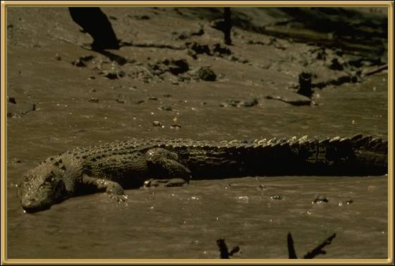

Crocodiles are different to Alligators (there are no Alligators found naturally in Australia), and the salt-water Crocodile is a very dangerous creature. In fact, very often they are considered to be the most dangerous of all the reptiles. They do attack people, including people in boats, so they are definitely worthy of a cautious respect. Although they might seem clumsy on land, they are highly agile in the water. They were hunted almost to extinction in the late 1960's, but have recovered to the point where they are not considered at all endangered.
Photographer: Unknown